-
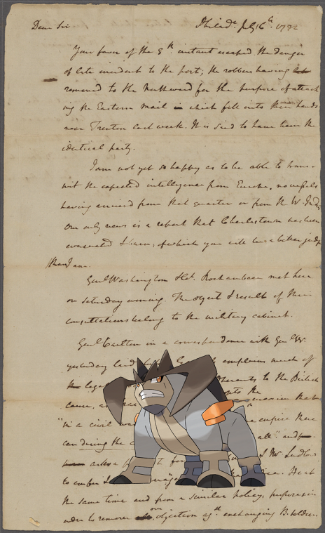Terrakion | 1782 July 16.
-
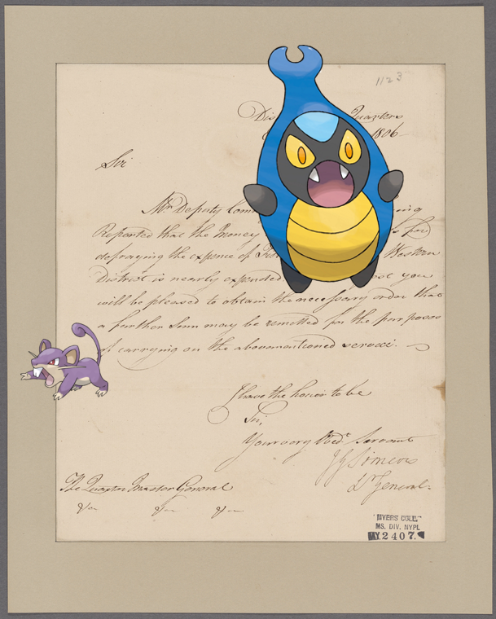Karrablast, Rattata – Somers, J.G. Headquarters, Exeter District. To Quarter Master General!
-
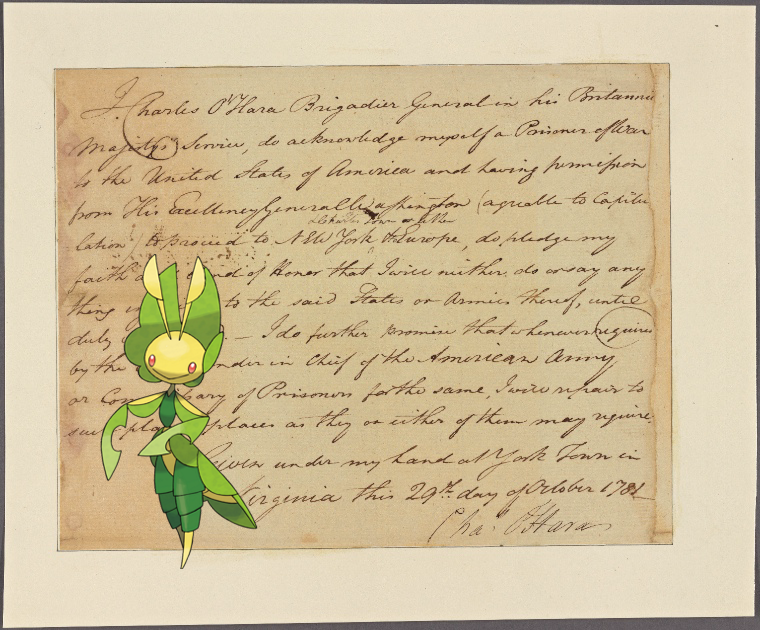Leavanny – Document
-
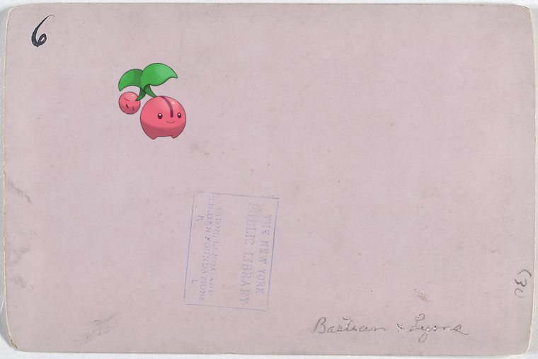Cherubi @ Charlie Bastian and Denny Lyons!
-
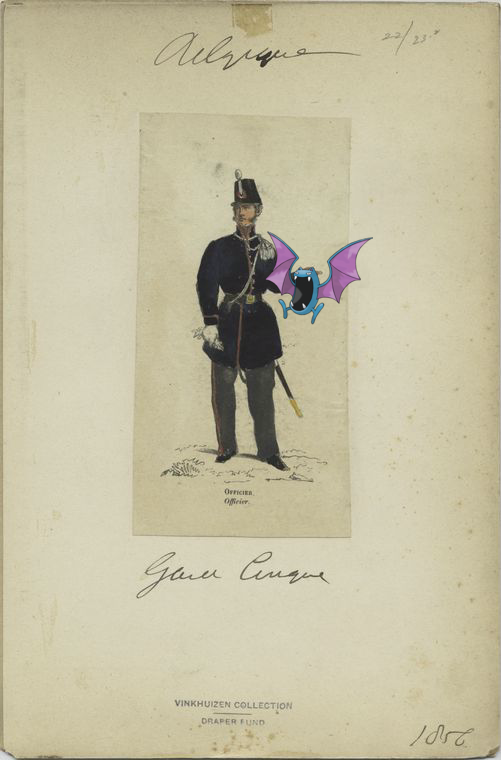Golbat ; Garde civique - Officier. 1856.
- 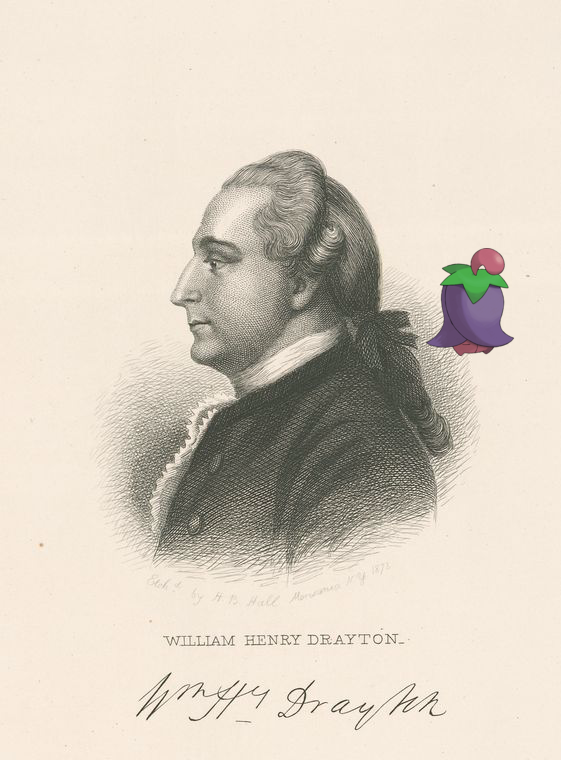
- 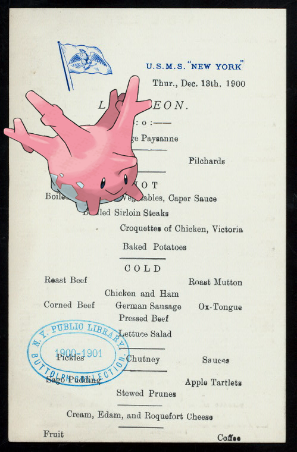
-
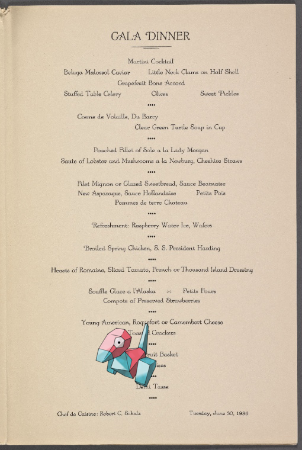Porygon @ S.S. President Harding!
-
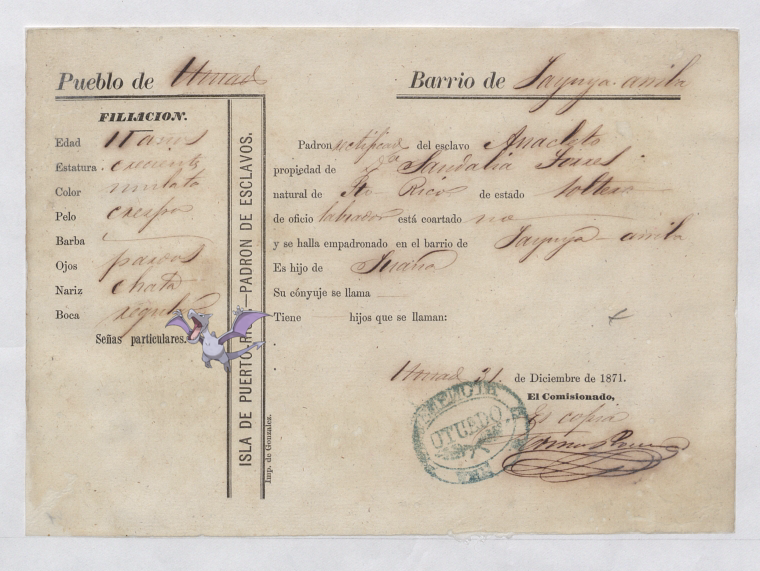Aerodactyl ; Padron de Esclavos: Anacleto.
-
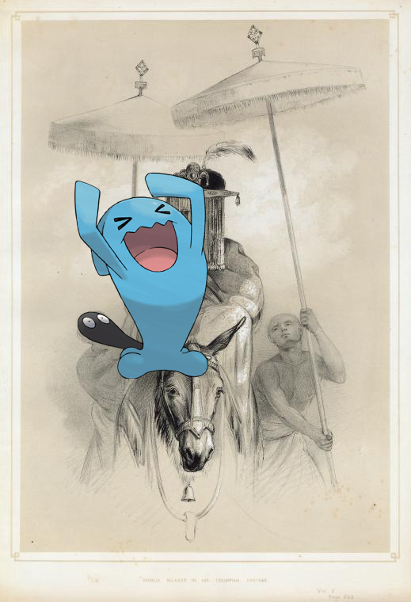Wobbuffet – Sahela Selassie in his Triumphal Costume.
-
 Hitmonchan on Italy. Kingdom of the Two Sicilies, 1809.
Hitmonchan on Italy. Kingdom of the Two Sicilies, 1809. -
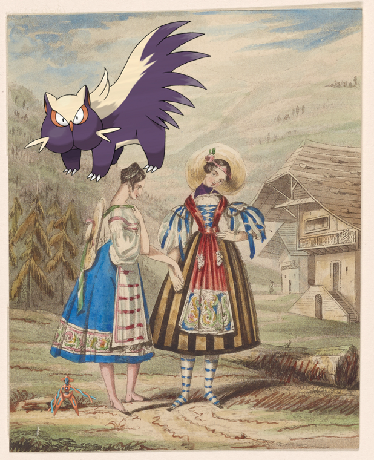Deoxys-Normal, Stunky @ [Swiss villagers].
- 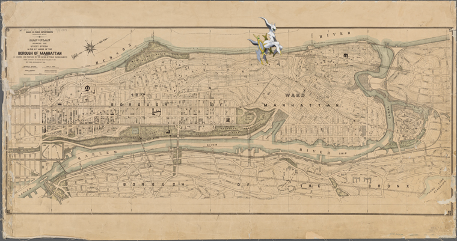
-
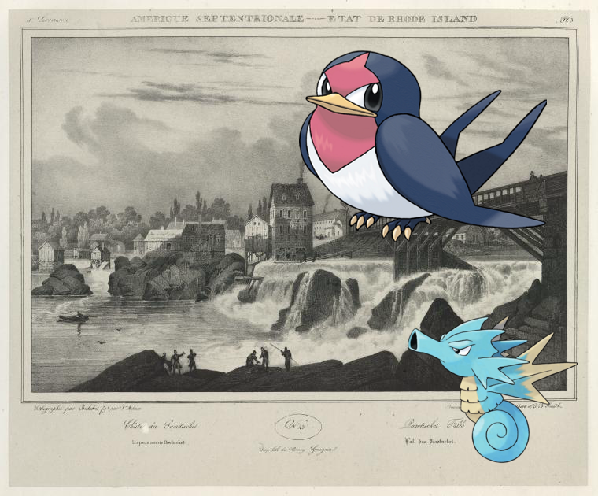Taillow, Seadra + Danbucket Falls.!
-
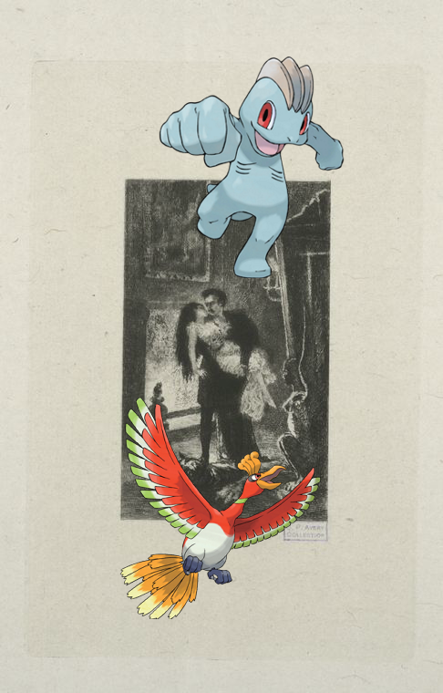Ho-Oh, Machop @ Les adieux..
-
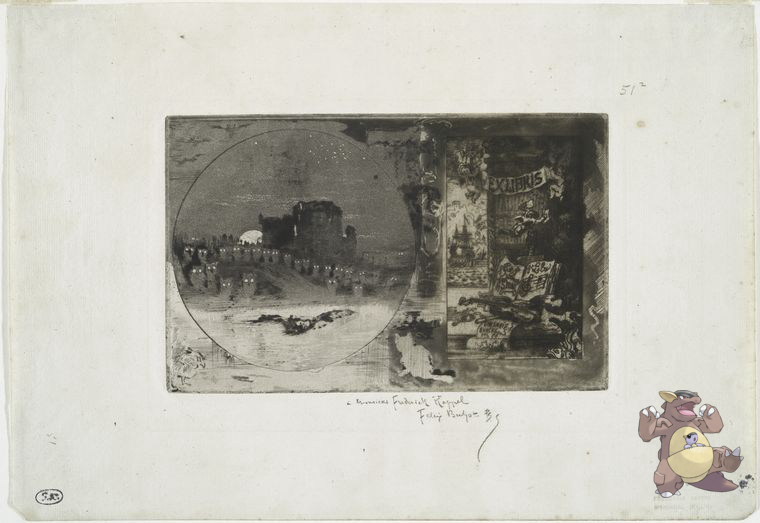Kangaskhan ; Ex libris de Léon Lerey ; Le château des hiboux.
-
Teddiursa + Ise monogatari = The Tales of Ise..
-
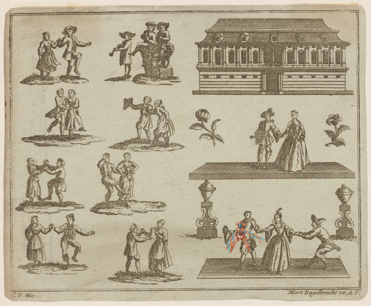Deoxys-Normal on [Peasants dancing].
- 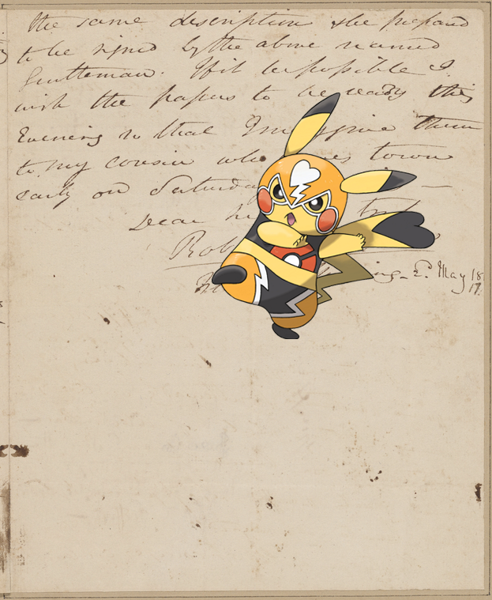
-
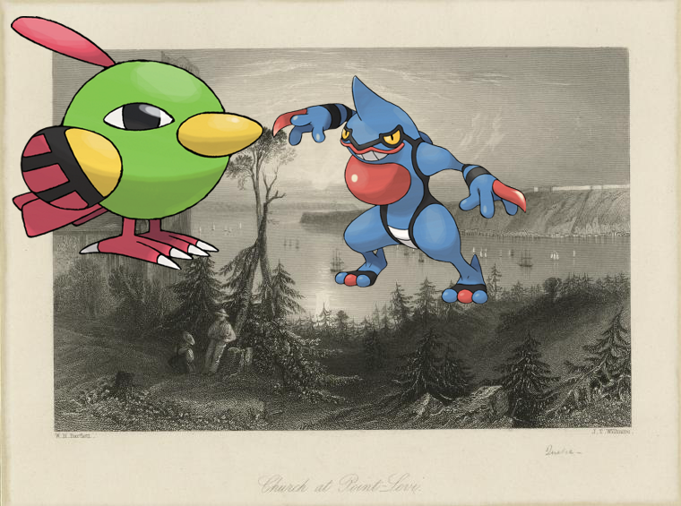Toxicroak, Natu ; Church at Point-Levi..
- 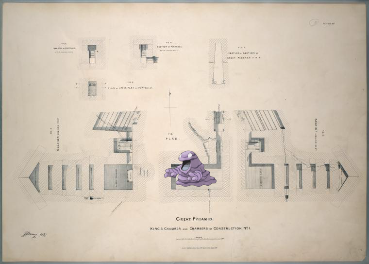
-

-
![Fletchinder on Letter to Tapping Reeve [Litchfield]. http://digitalcollections.nypl.org/items/ab4c2760-c52d-012f-7639-58d385a7bc34](media/finding-hMlZndGX.png) Fletchinder on Letter to Tapping Reeve [Litchfield]!
Fletchinder on Letter to Tapping Reeve [Litchfield]! -
 Magby, Lanturn | Springs.
Magby, Lanturn | Springs. -

-

-
 Conkeldurr ; Front Cover
Conkeldurr ; Front Cover -
![Ampharos, Alakazam, – Trois diferents corniches. [sic]! http://digitalcollections.nypl.org/items/fa7b6b70-c6e7-012f-8717-58d385a7bc34](media/finding-JHmTDVHc.png) Ampharos, Alakazam, @ Trois diferents corniches. [sic].
Ampharos, Alakazam, @ Trois diferents corniches. [sic]. -

-
 Smoochum – Chapour. Bas-relief E.
Smoochum – Chapour. Bas-relief E. -
![Mawile ; Letter to [Joseph Reed?]! http://digitalcollections.nypl.org/items/3a5250e0-0028-0130-3eef-58d385a7bc34](media/finding-gbQdOgqf.png) Mawile @ Letter to [Joseph Reed?]!
Mawile @ Letter to [Joseph Reed?]! -
 Clawitzer, Abomasnow + Cotton pickers, Pulaski County, Arkansas
Clawitzer, Abomasnow + Cotton pickers, Pulaski County, Arkansas -
 Simisear on Baboon-Man.
Simisear on Baboon-Man. -
 @ Oh! Ebenezer!
@ Oh! Ebenezer! -

-

-
![Ralts + Danforth's House [in which Col. Greene was killed.] http://digitalcollections.nypl.org/items/df4bd740-c608-012f-535b-58d385a7bc34](media/finding-vmuQgkqQ.png)
-
 Omastar + Roger Williams.
Omastar + Roger Williams. -

-
 Meganium + untitled!
Meganium + untitled! -